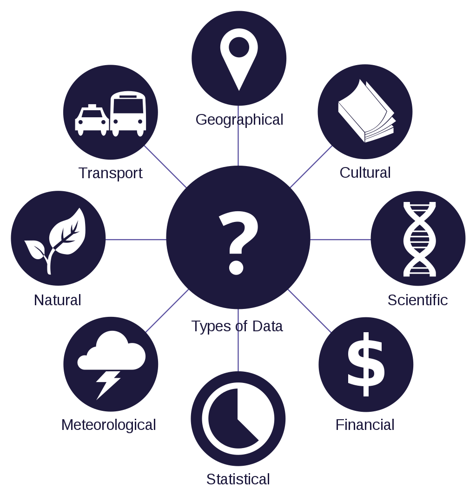
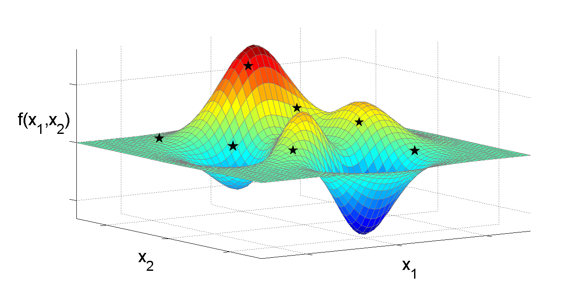
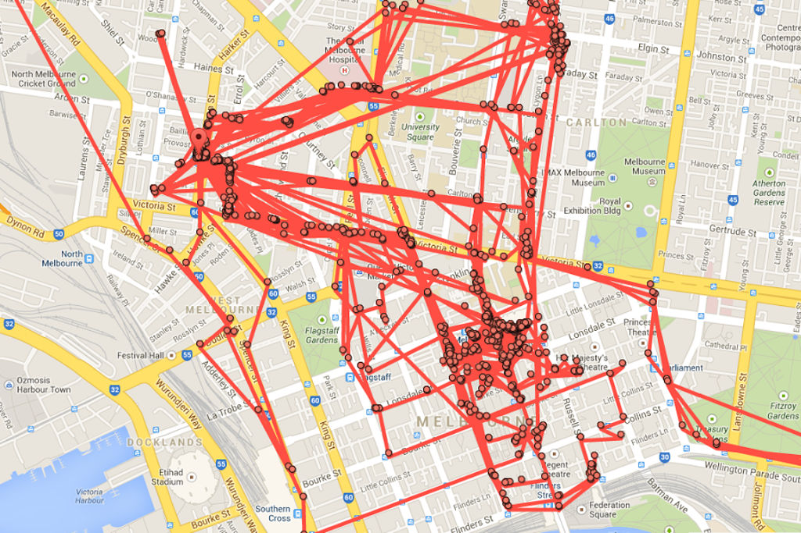
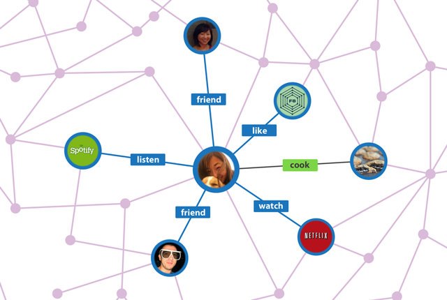

¡Es la era de la inteligencia artificial!


¿Por qué
aprendizaje
?
En computación
modelamos fenómenos
computables,
abstraemos las características más importantes,
diseñamos algoritmos,
para el
entendimiento desde la máquina
.
Ok, la
IA
necesita de nuestros datos, pero, ¿qué nos da a cambio?
 
O, en su defecto...
¡Muchas gracias!